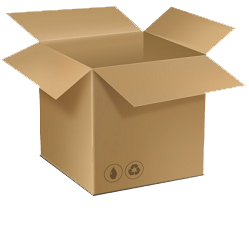
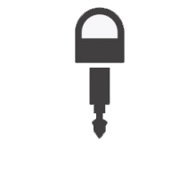

Michal Paszkiewicz
Monty Hall explained
How to explain the Monty Hall problem to a disbeliever
The Monty Hall problem is an excellent example of a problem where mathematics seem to disagree with common sense. It was first presented as a probability puzzle in a letter by Steve Selvin to the American Statistician in 1975. The problem was an alteration of the TV show "Let's Make a Deal" (hosted by Monty Hall), which was a game that involved an offer of an item of a certain value and the possibility of exchanging it for something better, albeit at a risk of getting a "zonk" (item of little value) instead.
This altered game involved a three boxes labeled A, B and C.
A B COne of the three contained keys to a 1975 Lincoln Continental (car). The other two were empty (no goats were involved, contrary to popular belief - these were introduced by Marilyn vos Savant). The contestant would pick one of the three boxes.
A B CThe host (knowing which box has the keys) would then reveal one of the other two boxes was empty.
A  B CThe host would then give the contestant a choice to either stick to the box he originally chose, or to switch to other, unrevealed box.
The odd thing with this problem is that switching is the optimal choice.
A B  CPeople struggle to see this at first, because the reasoning behind this is quite subtle. Most people notice that there are two boxes left, so they believe that the chance of either of the boxes holding the key is \( \frac{1}{2} \). However, mathematics shows that if you always switch, you will win \( \frac{2}{3} \) of the time!
I will now present various ways of arriving at this result with the hope that anyone reading this will be able to find a way to get around the mental barrier that is stopping them from seeing the truth.
Options
One of the ways we can analyse the probability of a certain result from a certain action is to analyse what the possible outcomes are. People who think that the chances are even (50%) in the Monty Hall problem already know about analysing options. They think that there are only two options, one where the chosen box has the keys, the other being that the other box has the keys. This would be entirely true if there were always two boxes, one of which contained the keys. However, if we analyse the whole Monty Hall problem, we get the following table:
| Keys are in box | Contestant chose box | Host opens box | Contestant switches | Result |
|---|---|---|---|---|
| A | A | B or C | A for B or C | loses |
| A | B | C | B for A | wins |
| A | C | B | C for A | wins |
| B | A | C | A for B | wins |
| B | B | A or C | B for A or C | loses |
| B | C | A | C for B | wins |
| C | A | B | A for C | wins |
| C | B | A | B for C | wins |
| C | C | A or B | C for A or B | loses |
We can see from this table that there are 9 total possible results. If you always switch, there are 3 possible results where you would lose and 6 possible results where you would win. So therefore, by switching you would win \( \frac{6}{9} \) of the time, which is \( \frac{2}{3} \) of the time.
Probability
We can also evaluate the probability of where the box is as the game progresses. When we pick the original box, we know that the probability that the keys will be in there is \( \frac{1}{3} \). The probability that the keys will not be in the box you originally chose is \( 1 - \frac{1}{3} = \frac{2}{3} \). Just from this knowledge alone, you could decide that you will always switch, since the probability that the other boxes have the keys is \( \frac{2}{3} \).
The fact that one of the other boxes (that is empty) is revealed doesn't really make a difference. It is in fact equivalent to the host saying that for the option of switching, if one of the other two boxes has the keys, he will always pick that one as your "switched" box. And it is also the same as if you revealed the contents of both of the other boxes when switching. The revealing of the box does not actually change the probability of your original box having a chance of \( \frac{1}{3} \) of being the box with the keys.
Contradiction
One of the ways you can persuade yourself that the outcome is not \( \frac{1}{2} \) is by arriving at the following contradiction:
If you have a belief that you have a 50% chance of opening the correct box if you stick to it, then it makes no difference if you make your mind up after one of the boxes is revealed to be empty, or before the game entirely. Since you know the process of the game will always result in two boxes being left unrevealed, one of which is yours, you are saying that the probability that the keys are in the box you originally chose is always \( \frac{1}{2} \). This would mean that at the start of the game, each of the three boxes has a probability of \( \frac{1}{2} \) of containing the keys, since whichever one you will chose will be the box that eventually has probability \( \frac{1}{2} \) of being the one with the keys, once an empty box has been revealed. We know this cannot be the case, since if there are 3 cards, the chance of picking the right box has to be \( \frac{1}{3} \). We have arrived at a contradiction.
Even if this is the case, then we have three boxes with probability \( \frac{1}{2} \) of containing the keys. So in total, the probability of the keys being in one of the boxes is $$P(keys \ are \ in \ a \ box) = 3\times \frac{1}{2} = \frac{3}{2} = 1.5$$ Anyone who has completed even the most basic maths course knows that probabilities always have to add up to 1. A probability of 1.5 has no meaning and shows you have made a big mistake.
Try it out
Below I have set up an equivalent game involving three cards. One of the cards is a PacMan card. The other two are ghost cards. You get to chose a card, after which one of the two cards out of the ones you didn't pick is revealed to contain a ghost. You then get a chance to stay with the card you originally chose, or to switch to the other one.
If you play just a few games, you may not notice how switching is the side that wins more times by far. I therefore recommend you play this game at least a few dozen times. After playing a few games, some statistics will appear below the game to help you see how you're doing. You should (most likely) see that the more games you play, the closer the percentage of games that would have been won by switching will be to 66.6%.
Scaling up
One of the ways that you can try and make it more obvious to yourself how this effect works is by scaling up the game. Below is the same game, but with 20 cards. After selecting one card, 18 of the 19 other cards will be revealed to show a ghost on the other side.
With the increased number of cards, the chance that you will win if you switch has increased a lot. After playing this game a few dozen times, you should see the percentage of games that would have been won by a person that always switches should tend to 95%.
Paradox
We still have a paradox. The problem is that even with 20 cards, if someone (who did not know which card you originally chose) were to show up just after you had chosen a card and 18 others had been turned over, the chance of them picking the PacMan card is still \( \frac{1}{2} \). How is that possible?
What you can see is that there is a difference between this new person and you. You knew which card you originally chose, while they do not. It is the fact that you have additional knowledge that means that you have the upper hand and have a better chance of guessing where the card is.
You know that there is a 5% chance that the card will be the one you originally chose, and 95% chance that it will be the other. The newcomer, if he doesn't know the rules of the game and has no idea why some of the cards are upturned, will be unaffected by the upturned cards and will therefore just be picking which of the two cards he thinks is PacMan. But even if the newcomer knows the rules of the game, it doesn't help him if he doesn't know which card you originally chose. This is because there are two options. Either you picked card A and therefore P(A) = 5% and P(B) = 95% or you picked card B before the cards were flipped and therefore P(B) = 5% and P(A) = 95%. He now only has 50% chance of guessing which card you picked originally. The probabilities for each card being the Pacman card are now: $$ P(A) = 50\% \times 5\% + 50\% \times 95\% = 50\%\\ P(B) = 50\% \times 95\% + 50\% \times 5\% = 50\% $$
published: Wed Oct 05 2016